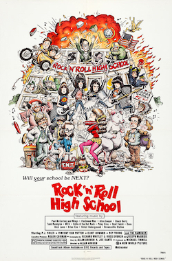

Allan Arkush and Joe Dante
1979
93 minutes
TITLE: Rock n Roll High School TEXT PLACEHOLDER 005
You rightfully go into this with low expectations. They are met and occasionally exceeded.
This was another one that always dwelt in the blind spot in your cultural knowledge. You were familiar with the Ramones' entire catalog long before you had any chance to see this film. You always liked the Ramones, but something about them and people's reactions to them always made you queasy. It always felt like the Ramones slipped into a cultural role previously played by Sha-Na-Na. And part of their appeal seemed reactionary. They were like a throwback to the good old days of just plain rock 'n roll without all this other nonsense. Their leather jacket clowning felt safe enough for the squares to consume since they never dug too deep into the catalog or listened too closely to the music.
For the average square, the Ramones may as well have been four idiots in leather jackets doing really fast covers of their favorite 1950s songs, which admittedly forms a good bit of their catalog. Plenty of their music had subversive shit about sniffing glue or joining the SLA or being a male hustler at a notorious and now-gentrified NYC intersection. But this was not getting clocked by someone just showing up to see the clown princes of Punk Rock do their schtick while the crowd awkwardly pogoed. Seeing them sometimes felt like watching a particularly vicious trained seal balance a ball on the tip of its nose.
You feel like a hipster douchebag gatekeeper for being mad that other people love a band you love "the wrong way". You try to shrug off the feeling.
You like Paul Bartel. You like Mary Woronov. You bathe in this love and feel your attitude lightening. Good intentions and good vibes go a long way. They used to make things for teenagers in this country. Repeat to yourself it's just a cartoon, it's just a cartoon.
Time to choose something different: